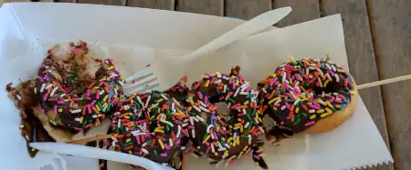
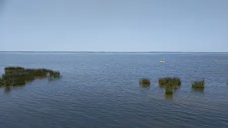
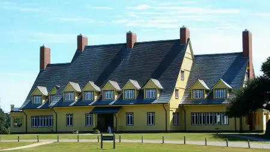

Fig.1 - Houses on the Currituck Sound.

Fig.2 - Donuts On a Stick.

Fig.3 - Kayaking in the Currituck Sound.Fig.4 - View from boardwalk in Duck, NC.Fig.5 - Currituck Lighthouse.Fig.6 - Blue Heron in Currituck Sound.

Fig.7 - Whalehead Club Museum.